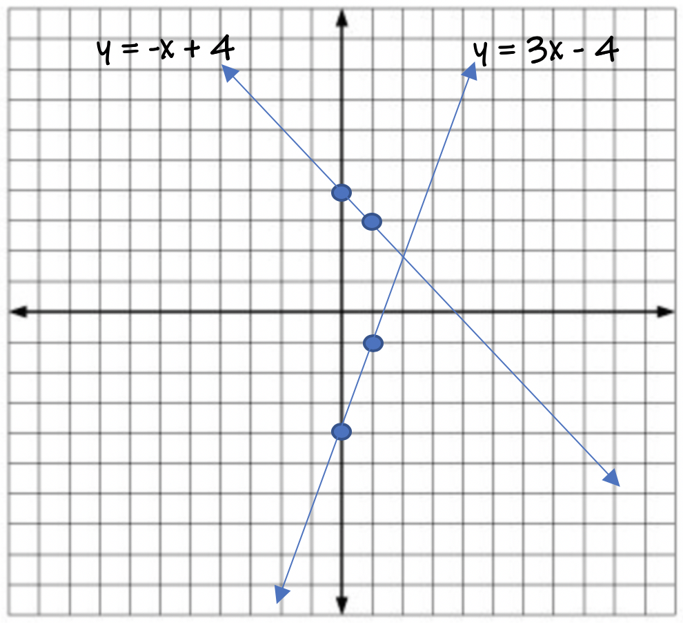

A System of Equations is when you have a coordinate plane with two lines graphed on it together. When this occurs, there are three different scenarios that can occur:
The "solution" to a system of equations is the point (x, y) where the two lines intersect.
To locate the solution to a system of equations, you can graph the system and locate where they cross. This is typically the method used the most.
To locate the solution you can also use Algebra to calculate the intersection point (x, y). If you like solving equations better than graphing, then you would probably prefer this method. There are two algebraic methods to solve a system.
There are three different ways to solve a system of equations:
The first method we will do is the Graph and Check method. Simply graph the two lines, then locate the point (x,y) where they cross.
Example 1: Solve the System:
y = 2x + 3 and y = -3x + 3
The solution to the system is (0, 3).
Example 2: Solve the System:
y = 3x - 4 and y = -x + 4

The solution to the system is (2, 2).
Example 3: Solve the System:
y = 2x - 2 and y = -4x + 4
The solution to the system is (1, 0).
The second method to solve a system of equations is using Substitution. Because both equations are y =, and since both equations are equal to eachother at the point of intersection, we can use substitution and set the two right-sides of the equations equal to each other and solve for x. Then use substitution into either equation to solve for y.
The Substitution Method is an algebraic technique to solve for (x, y) and no picture is drawn using this method.
Since the two slope-intercept equations are equal to eachother at the point of intersection, we set the equations equal and solve for x. Then solve for y.
Example 1: Solve the System: y = 2x + 3 and y = -3x + 3
Step 1: 2x + 3 = -3x + 3
Step 2: -1x + 3 = 3
Step 3: -1x = 0
Step 4: x = 0 *Answer
Substitute x into either equation and solve for y.
Example 2: Solve the System: y = 3x - 4 and y = -x + 4
Step 1: 3x - 4 = -x + 4
Step 2: 4x - 4 = 4
Step 3: 4x = 8
Step 4: x = 2 *Answer
Substitute x into either equation and solve for y.
Example 3: Solve the System: y = 2x - 2 and y = -4x + 4
Step 1: 2x - 2 = -4x + 4
Step 2: 6x - 2 = 4
Step 3: 6x = 6
Step 4: x = 1 *Answer
Substitute x into either equation and solve for y.
The Elimination Method works best when your equations are written in Standard Form ax + by = c. This technique does not work well when equations are in slope-intercept form y = mx +b. Those types of equations are best solved using the substitution method.
The Elimination Method works with eliminating one of the variables within each equation, which then allows us to solve the equation for either x or y. The elimination method works best when you have equations in standard form with opposite coefficients on either the x or y variables. Combine all like terms and solve for x or y.
Example 1: Solve the system using elimination:
2x + y = 3 and 3x + y = 3
There are no opposite coefficients in either equation. Multiply one or both equations by a number of your choice in order to make opposite coefficients. Then add the equations together.
I chose to multiply equation two by -1 to make the y-coefficients opposite numbers.
-1(3x + y = 3)
-3x + -1y = -3
Now I will add both equations together to solve the system.
(2x + y) + (-3x + -1y) = (3 + -3)
Now I will combine all like terms
2x + -3x + 1y + -1y = 0
-1x = 0
x = 0 *Answer
To get the value of y, substitute x=0 into either equation and solve for y. I will choose equation one:
2x + y = 3
2(0) + y = 3
y = 3 *Answer
The solution to the system is (0, 3).
Example 2:
Solve the System: -3x + y = -4 and x + y = 4
There are no opposite coefficients on either the x or y terms. I choose to multiply equation 1 by -1 to make opposite coefficients on the y-variables.
-1(-3x + y = -4)
3x - y = 4
Now I will add both equations together and combine like terms.
(3x - 1y) + (1x + 1y) = (4 + 4)
3x + 1x -1y + 1y = 8
4x = 8
x = 2 *Answer
Use substitution into either equation to solve for y.
I choose equation 2:
x + y = 4
2 + y = 4
y = 2 *Answer
The solution to the system is (2, 2).
Example 3:
Solve the System: -2x + y = -2 and 4x + y = 4
There are no opposite coefficients on either the x or y terms. I choose to multiply equation 1 by -1 to make opposite coefficients on the y-variables.
-1(-2x + y = -2)
2x - 1y = 2
Now I will add both equations together and combine like terms.
(2x - 1y) + (4x + 1y) = (2 + 4)
2x + 4x -1y + 1y = 6
6x = 6
x = 1 *Answer
Use substitution into either equation to solve for y.
I choose equation 2:
4x + y = 4
4(1) + y = 4
4 + y = 4
y = 0 *Answer
The solution to the system is (1, 0).
Example 2:
y = 2x + 3
y = 5x
Example 3:
y = -1/4x + 3
y = 3/4x - 1